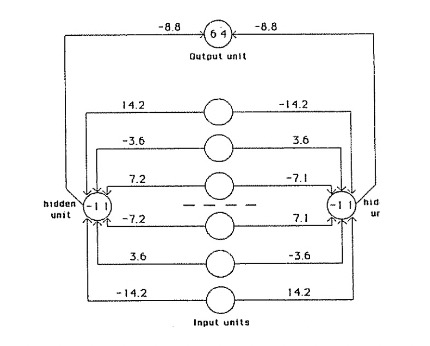
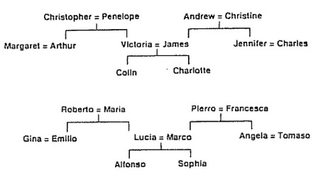
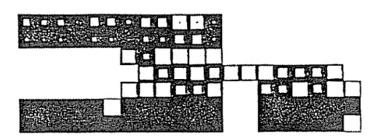
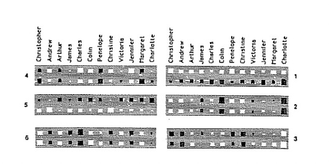
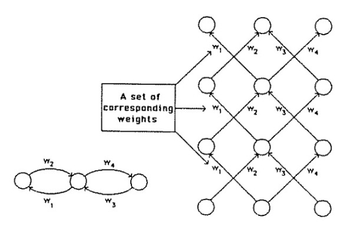

Learning Representations by Back-propagating Errors
Annotated by: Noah Schliesman
Published on: by David Rumelhart, Geoffrey Hinton, and Ronald Williams
Abstract
David Rumelhart, Geoffrey Hinton, and Ronald Williams establish the heart of backpropagation for learning in neural networks. The procedure minimizes the difference between the actual output vector of the network and the desired output vector. Such an idea still remains at the core of most neural nets today.[1]
Theory
Backpropagation can be characterized by a minimization between the actual output and the desired output by optimizing parameters progressively. The authors emphasize the complexity of learning with hidden units, mentioning skip connections and that all units within a layer have their states in parallel, but different layers are sequential.
The total input to unit \( x_j \) is described as a linear function of the outputs of the units \( y_i \) that are connected to unit \( j \) and the weights of these connections \( w_{ji} \).
\[ x_j = \sum_i y_i w_{ji} \]
They also note that a bias can be added as a threshold for the unit to be active. We can encompass the notion of \( x_j \) by adding such a bias term,
\[ x_j = \sum_i y_i w_{ji} + b_j \]
Such a bias term effectively shifts the input up or down, changing the threshold required for activation. Regardless of bias term or not, we can calculate the gradient of the total input \( x_j \) with respect to weight \( w_{ji} \) as,
\[ \frac{\partial x_j}{\partial w_{ji}} = y_i \]
Similarly, the gradient of the total input \( x_j \) with respect to the output \( y_i \) is,
\[ \frac{\partial x_j}{\partial y_i} = w_{ji} \]
The authors transition to the discussion of the output of a simple neural unit using a sigmoid activation function,
\[ y_j = \frac{1}{1 + e^{-x_j}} \]
The forward pass entails that units in each layer are determined by the inputs they receive, shown by the equations above. The backwards pass is more involved and requires the gradient of the error surface with respect to each transformation.
The sigmoid activation has a smooth gradient which will come in handy when we compute how these neurons change with respect to the difference in output and expected vectors,
\[ \frac{\partial y_j}{\partial x_j} = y_j (1 - y_j) \]
To find such a difference between output vectors and desired output vectors, we can measure error using least squares. Let,
- \( c \) be an index over input-output cases
- \( j \) be an index over output units
- \( y_{j,c} \) be the actual output state
- \( d_{j,c} \) be the desired output state
The total error is computed by comparing the actual output and the desired output for every case,
\[ E = \frac{1}{2} \sum_c \sum_j (y_{j,c} - d_{j,c})^2 \]
The error term is squared to ensure that the error is always positive and so that larger errors are emphasized more than smaller ones. By taking the sum of these squared errors, the total error provides a single measure of the network’s performance across all examples. The coefficient \( \frac{1}{2} \) is included for convenience when computing the gradient of the error with respect to the weights.
We can compute the gradient of the total error \( E \) with respect to the output \( y_j \). We can consider a single output unit \( j \) and single case \( c \) and extend this gradient to all units without loss of generality due to the nature of the summands,
\[ E_{j,c} = \frac{1}{2} (y_j - d_j)^2 \]
Thus, the gradient of the total error \( E \) with respect to the output \( y_j \) is simply,
\[ \frac{\partial E}{\partial y_j} = y_j - d_j \]
The next step is to obtain the gradient of the total error \( E \) with respect to the input \( x_j \). We can expand such a gradient using the chain rule,
\[ \frac{\partial E}{\partial x_j} = \frac{\partial E}{\partial y_j} \cdot \frac{\partial y_j}{\partial x_j} \]
From here, we can simply substitute our activation gradient into the second term,
\[ \frac{\partial E}{\partial x_j} = \frac{\partial E}{\partial y_j} \cdot y_j (1 - y_j) = (y_j - d_j) \cdot y_j (1 - y_j) \]
To recap, we now understand how total error \( E \) changes with respect to both the output \( y_j \) and input \( x_j \). The primary motivation for finding these intermediary gradients is to obtain the gradient of the total error \( E \) with respect to a weight \( w_{ji} \). We can again do this using the chain rule,
\[ \frac{\partial E}{\partial w_{ji}} = \frac{\partial E}{\partial x_j} \cdot \frac{\partial x_j}{\partial w_{ji}} \]
We already computed the change in input \( x_j \) with respect to weight \( w_{ji} \), so our gradient is,
\[ \frac{\partial E}{\partial w_{ji}} = \frac{\partial E}{\partial x_j} \cdot y_i = (y_j - d_j) \cdot y_j (1 - y_j) \cdot y_i \]
Let’s go back into our computation of the gradient of total error \( E \) with respect to the output \( y_j \). Using the chain rule,
\[ \frac{\partial E}{\partial y_j} = \frac{\partial E}{\partial x_j} \cdot \frac{\partial x_j}{\partial y_j} = \frac{\partial E}{\partial x_j} \cdot w_{ji} = (y_j - d_j) \cdot y_j (1 - y_j) \cdot w_{ji} \]
We can now generalize to the case of all units \( j \),
\[ \frac{\partial E}{\partial w_{ji}} = \sum_j (y_j - d_j) \cdot y_j (1 - y_j) \cdot y_i \]
\[ \frac{\partial E}{\partial y_j} = \sum_j (y_j - d_j) \cdot y_j (1 - y_j) \cdot w_{ji} \]
Let’s consider the time complexity of this algorithm. Let \( N \) be the maximum number of neurons in a layer and let \( W \) be the total number of weights in the network. We can describe the network as training with,
\[ O(M \cdot W) \]
Take careful note that this is using a least squares loss function. There are many other choices of loss function, as well as activation function other than sigmoid (such that it is smooth and therefore differentiable).
From here, we accumulate the gradient of the total error with respect to the weights over all the input-output cases before changing the weights. For some learning rate \( \epsilon \),
\[ \Delta w = -\epsilon \frac{\partial E}{\partial w} \]
To improve this method, the authors propose an acceleration method, where the gradient modifies the velocity of the point in the weight space. Let there be a time step \( t \) and exponential decay factor \( \alpha \in [0, 1] \). The acceleration-based gradient update is described as,
\[ \Delta w(t) = -\epsilon \frac{\partial E}{\partial w(t)} + \alpha \Delta w(t-1) \]
In neural networks, symmetry generally refers to the situation where the structure or initialization of the network causes different neurons to behave identically. Weight Symmetry is when the weights are initialized with the same (or mirror) weights. Activation Symmetry is when the activation patterns of neurons are symmetric. It’s important to detect and break symmetry to avoid redundancy, improve learning efficiency, and allow for generalization. The authors use small initial random weights to prevent this symmetry.
The authors note that this process is subject to being caught in local minima in the error-surface, but more connections can provide paths around these pitfalls.
Experimentation
The authors begin with the design of a neural network designed to detect mirror symmetry in an input vector. They use six input units, two hidden units, and a single output unit. The numbers on the connections represent the weights and the numbers inside the nodes represent biases. The network was trained on 64 possible input vectors, with weights adjusted after each sweep. The network ensures symmetric input vectors lead to zero net input for hidden units (activating the output unit). Non-symmetric input vectors in turn suppress the output unit.

The figure below shows two isomorphic family trees, of which the structure is identical despite different names. The authors then use a layered neural network to learn the triples in relationships (i.e., \( \text{person 1} \) \( \text{relationship} \) \( \text{person 2} \) ). The first two terms of a triple are encoded by activating two input units. The network must then activate the output unit that represents the third term.

They then analyze the activity levels in a five-layer network after it has learned. The bottom layer has input 24 units for \( \text{person 1} \) and 12 input units for \( \text{relationship} \). The white squares represent the activity levels. Each of the two input groups is connected to its own group of 6 units, which learn to encode people and relationships as distributed patterns of activity. Such a layer is then densely connected to the 12 unit central layer, which in turn is connected to the penultimate layer of 6 units. The output layer represents \( \text{person 2} \) and each unit in the layer stands for a particular person.

They also interpret the weights from the 24 input units ( \( \text{person 1} \) ) and 6 distributed representation units in the second layer. Here, white rectangles represent positive weights and black rectangles represent negative weights. The area of each rectangle encodes the magnitude of the weight.

They end by providing a recurrent network that runs for three iterations. They show the equivalent layered network on the right, where each layer corresponds to a time-step. For such a layered network to be equivalent to an iterative network, the weights between different layers must have the same value. This motivates averaging the gradients in each set of weights to ensure equivalence.

Citations
- [1] Rumelhart, D. E., Hinton, G. E., & Williams, R. J. (1986). Learning representations by back-propagating errors. Nature, 323(6088), 533-536.